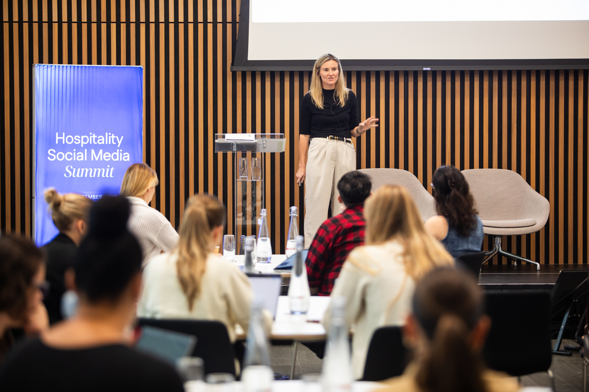
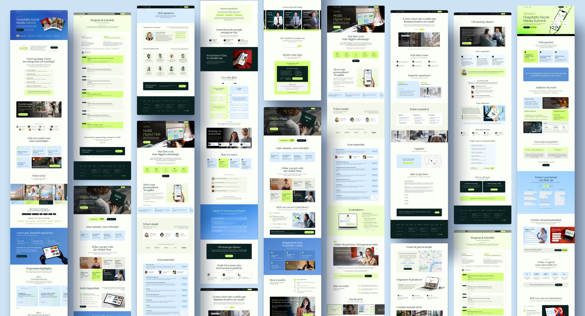
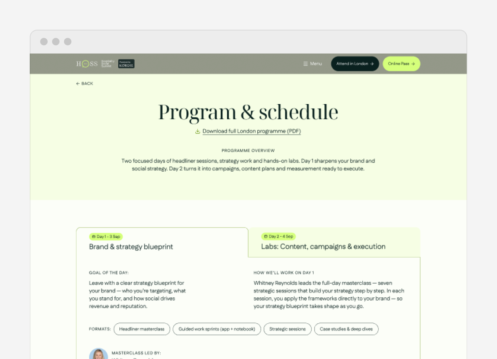
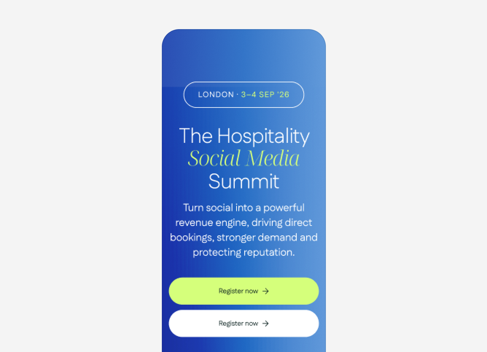

Overview
/01HoSS is an executive summit for hospitality marketing leaders, run by Kordie. Everything about the event lived on one website: programme, faculty, online pass, digital hub, venue, sponsorship and news. My job was to make a lot of information feel clear and inviting — one visual language, strong hierarchy and consistent details on every page. The wider project also spanned presentations, social media, email campaigns and event materials.


Website
/0241 unique pages, each with a desktop and a mobile version. Page by page, I set the visual accents: what readers notice first, how sections flow and where the key action sits — so dense content still reads at a glance.
The website brings together the programme, speakers, online access and registration. Shared page patterns and a consistent visual language connect these different journeys, with layouts adapted for desktop and mobile.



Presentations
/03Navigation preview · Full case content will be added separately.
Event materials
/05Navigation preview · Full case content will be added separately.
All projectsBack to top ↑
Social media
/04Navigation preview · Full case content will be added separately.